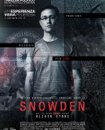
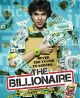

|
"Хакеры"
1995 год
Жанр: триллер, драма, комедия, криминал |
В ленте рассказывается о компьютерном гении Дэйде, который в 11 лет смог создать вирус и заразить им тысячи компьютеров Нью-Йорка. Спустя несколько лет парень перешёл в новую школу и подружился с компанией хакеров. Всё начинается со взлома сети нефтедобывающей компании «Эллингсон минералс». И дальше похищение 25 миллиардов долларов, риски глобальной экологической катастрофы, компьютерные войны, погоня ФБР — словом достаточно компонентов, чтоб держать в напряжении. И да, юная Анджелина Джоли. Сюжет фильма воплотил всё, что может вдохновить программиста. Здесь есть дух авантюризма, вызов, всемогущество, работа в команде и кропотливый труд.
|
 |
Кто я
2014 год
Жанр: фантастика, триллер, драма, криминал |
Кибертриллер о молодом компьютерном гении, который с детства мечтал стать супергероем и покорить мир. В реальности главный герой Бенджамин — никто. Чтобы стать «супером» главный герой выбирает никнейм в даркнете вместо костюма, а его суперспособностью становится умение взламывать любые пароли. Но жизнь простого разносчика пиццы меняется, когда он встречает Макса — лидера группы программистов CLAY. Начинается все с безобидных преступлений: написать на окнах фармацевтической компании о том, что те проводят эксперименты над животными или испортить графики торговых индексов на бирже. Но постепенно их игры становятся все серьёзнее, появляются первые человеческие жертвы. Теперь Бенджамин — не просто супергерой, он — самый разыскиваемый хакер в мире. Что же ждёт молодого парня? Кто он на самом деле? |
|
Превосходство 2014 год
Жанр: фантастика, драма, триллер |
Супруги Уилл и Эвелин Кастер работают над созданием разумного компьютера, который смог бы вместить в себя человеческое сознание. Группировка террористов, недовольныая подобными бесчеловечными экспериментами, нападает на лабораторию и смертельно ранят учёного радиоактивной пулей. Эвелин создаёт компьютерную копию сознания своего умирающего мужа. «Поселившись» в машине и проникнув в интернет, Кастер становится самым умным созданием на планете. Он создаёт прообраз города-будущего, в котором Уилл избавляет людей от болезней, но лишает их свободы воли, вживляя чип-управления в голову. Не удивительно, что некоторые в таком супермозге видят угрозу. |
|  |
Сноуден
2016 год
Жанр: триллер, драма, биография |
Вряд ли есть человек, который ничего не слышал об Эдварде Сноудене — бывшем сотруднике ЦРУ, который слил секретную информацию, доказывающую слежку более, чем за миллиардом человек. В реальности Сноудена признали «изменником Родины», но в кино перед нами предстаёт не предатель, а хакер-патриот, реалист и идеалист. Фильм рассказывает о мотивах, которые подтолкнули Эдварда к тому, что он сделал. Насколько достоверно показана история Сноудена — тут решать только ему, а вот насколько интересно и зрелищно — уже зрителю. |
|
Кадры
2013 год
Жанр: комедия |
Два друга Билл и Ник всю жизнь занимались продажами, пока современный, пронизанный интернет-технологиямимир не разрушил их карьеру. Ребята кардинально меняют жизнь, пробуют себя в интернет-маркетингеи идёт стажироваться не абы куда, а...в Google? Мало того, что Билл и Ник практически ничего не понимают в IT, так ещё и новые боссы годятся им в сыновья. |
|  |
Тинейджер на миллиард
2011 год
Жанр: драма, биография |
Как эффективнее всего научиться программировать? Часами сидеть за книгами и видеоуроками? Или окончить курсы программирования? Главный герой фильма Топ Иттипат ищет ответы на эти вопросы. В свои 16 лет парень пытается создать свой бизнес, но каждая его идея терпит крах. Топ решает вернуться к образованию и, спустя время, становится одним из самых успешных молодых бизнесменов. Фильм основан на реальных событиях, сегодня Топу 34 года и его состояние оценивается в 600 миллионов долларов.
В фильме прослеживается мысль, что полезные качества начинающего программиста, такие как упорство, наблюдательность, уверенность, готовность идти на жертвы немаловажно подкрепить знаниями, которые могут лишь дать квалифицированные преподаватели. |